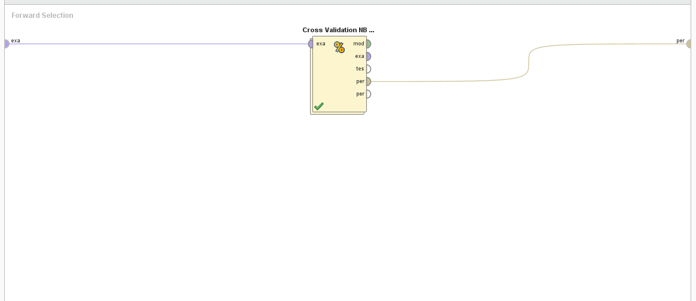
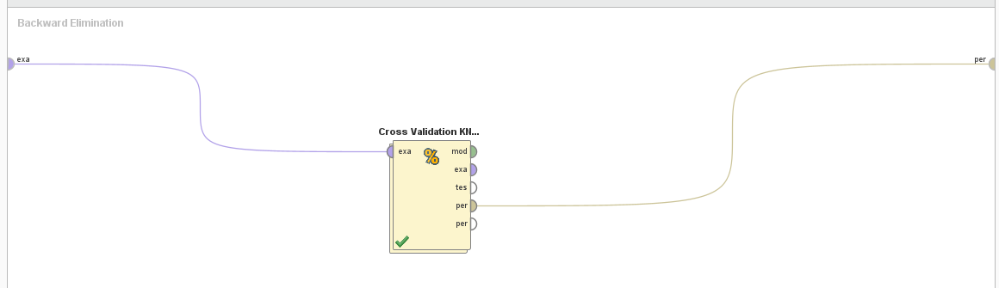
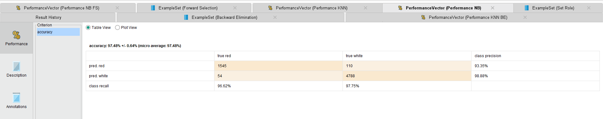
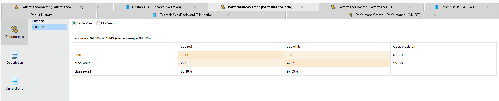
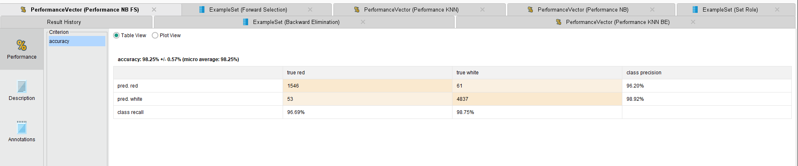
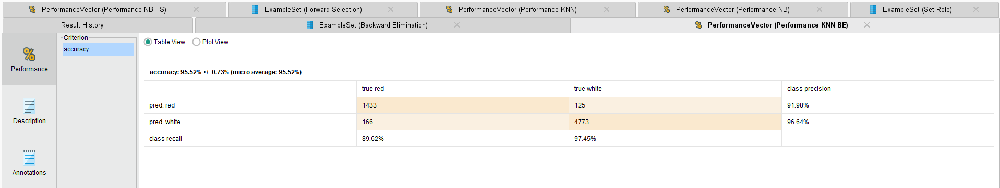

En este análisis, abordaremos el desafiante problema de la clasificación de vinos en dos
categorías distintas: "rojo" y "blanco". Este conjunto de datos, conocido como el "Wine
Dataset," nos presenta una interesante tarea de clasificación binaria que involucra una variedad
de atributos químicos y físicos medidos en diferentes vinos.
El objetivo principal de este estudio es desarrollar modelos de Machine Learning capaces de
identificar con precisión el tipo de vino (rojo o blanco) en función de estas características.
Para lograrlo, exploraremos el conjunto de datos, realizaremos un análisis exhaustivo de sus
atributos y estructura, y aplicaremos técnicas de clasificación para construir modelos
predictivos.
Este problema no solo pone a prueba nuestras habilidades en la construcción de modelos de
clasificación, sino que también demuestra la utilidad de la ciencia de datos y el Machine
Learning en la industria vitivinícola, donde la identificación precisa del tipo de vino puede
ser crucial para la calidad y la toma de decisiones. Acompáñanos en este viaje de análisis y
clasificación de vinos para desvelar los secretos detrás de cada botella.
Se trata de un problema de clasificación binaria supervisada. El objetivo es predecir el tipo de vino (rojo o blanco) en función de sus características.
Realizar un análisis de los atributos es de vital importancia por varias razones. En primer
lugar, permite comprender mejor la naturaleza de los datos y comprender a fondo la estructura y
el contenido de los mismos.
Esto incluye conocer la naturaleza de las variables, su distribución, relaciones entre atributos
y la presencia de valores atípicos o datos faltantes. Este conocimiento es esencial para tomar
decisiones informadas y
seleccionar las técnicas de análisis adecuadas.
En segundo lugar, es fundamental para identificar patrones y tendenncias que se puedan encontrar
en los datos. Esto puede revelar información valiosa que ayuda en la toma de decisiones y en la
generación de conocimientos.
Este análisis permite limpiar y preprocesar los datos, abordar valores atípicos, datos faltantes
y problemas de calidad de datos. La preparación adecuada de datos es esencial para el
rendimiento de los modelos de Machine Learning.
A través del análisis de datos, se pueden identificar los atributos más relevantes para el
problema. Esto simplifica los modelos, mejora su interpretación y puede aumentar su precisión.
El conjunto de datos de clasificación de vinos ("Wine Dataset") contiene varios atributos que describen características químicas y físicas de las muestras de vino. A continuación, realizo un análisis de estos atributos:
Lo primero a realizar es importar el conjunto de datos ya que este dataset es obtenido de la
página web Kaggle.
Una vez importado el dataset, procedemos a observar los atributos, en este caso podemos ver
que no existen valores faltantes. Asi como también podemos ver que la mayoría de los atributos
presentan una distribución normal gaussiana.
Como preparación de la data, se seteo el atributo Styke como label y no fue necesario realizar ningún otro cambio.
Para los modelos a considerar se utilizaron los algoritmos Naive Bayes y K-NN ya que se trata de un problema de clasificación.
En cada cross validation de 10 folds y una seed igual en cada uno, se realizo el training del algoritmo, se aplico el modelo y se realizo una prueba de performance.
Dentro de los procesos de feature selection se realizaron también cross validations.
 En cuanto a los resultados, pudimos observar en las matrices de confusión que el algoritmo que mejor se comporto fue el de Naive Bayes y luego el algoritmo de K-NN.
   Como se puede observar, los procesos de feature selection mejoraron en poca medida los resultados de los algoritmos en cuanto a la presición.
El conjunto de datos Wine es una herramienta valiosa en el campo del análisis y clasificación de
vinos. Al explorar este conjunto de datos, hemos identificado tres categorías principales de
vinos: vinos tintos, vinos blancos y vinos de calidad. Cada vino se describe a través de una
serie de atributos químicos y físicos que influyen en sus propiedades organolépticas.
Al analizar los atributos, hemos observado la diversidad química entre las categorías de vinos,
lo que respalda la necesidad de un enfoque de clasificación. Esta diversidad también resalta la
importancia de aplicar técnicas de Machine Learning para predecir y clasificar vinos en función
de sus características.
La aplicación de algoritmos de clasificación, como Naive Bayes, K-Nearest Neighbors y Regresión
Logística, puede ayudar a los enólogos y catadores a identificar y distinguir entre vinos en
función de sus atributos químicos, lo que facilita la toma de decisiones en la producción y
selección de vinos.
En resumen, el conjunto de datos Wine es un recurso esencial para comprender la química de los
vinos y desarrollar modelos predictivos para la clasificación de vinos. Esta herramienta
contribuye no solo al mundo del vino, sino también al campo más amplio del análisis de datos y
Machine Learning, demostrando cómo la tecnología puede mejorar nuestra comprensión y apreciación
de la enología.